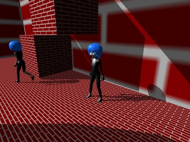

サンプルプログラム ３Ｄアクション基本＋深度値を利用した影表現基本 ( 要プログラマブルシェーダー２．０ )
＜追加情報＞
こちらに『３Ｄアクション基本』をパワーアップさせたサンプルゲーム『Sword Bout』があります。
より実用的な３Ｄアクションゲームのサンプルプログラムをご所望の方はよろしければご覧ください。
( 尚、『Sword Bout』での影表現はオリジナルシェーダーを使用したものではなく、ＤＸライブラリの影表現機能を使用したものとなります )
『Sword Bout』ダウンロードページ
( プログラム解説書籍用に作成したサンプルゲームですが、全プログラムとデータは書籍の購入関係なくダウンロードできます )

「６．３Ｄアクション基本＋プレイヤー以外のキャラクター」の影表現を丸影ではなくプログラマブルシェーダーを用いた影にしたものです。
手順としてはまず影描画用のでっかい描画可能画像を用意して、カメラの射影モードを正射影( 遠くも近くも同じ大きさに見える設定 )
向きをライトの向きにしてステージ全体が見渡せる位置に移動した上でステージモデル＋キャラクターモデルを描画します。
このとき使用するシェーダーでは画像に色を描画するのではなく、頂点シェーダーで算出したビュー座標をテクスチャ座標として
ピクセルシェーダーに渡し、ピクセルシェーダーではビュー座標のＺ値( 深度、カメラからの距離に比例するもの )を色の代わりに描画します。
（ 「ステージ全体が見渡せるカメラ」で深度値を描画した画像、色が白に近いほどカメラから離れていることを示します ）
次にカメラを本来の設定に戻した後、描画した深度値画像を使って影を描画するシェーダーを使って描画します。
このとき事前に深度値を描画する際に使用したカメラの設定結果である「ビュー行列」と「射影行列」を頂点シェーダーの定数として設定しておき、
描画の際に頂点シェーダー内でその行列を使って「深度値描画の際のビュー座標と射影座標」を算出してピクセルシェーダーへの出力に代入します。
次にピクセルシェーダーでは射影座標から「深度値描画では画面の何処に描画されるのか」を算出し、その結果を元に「深度値画像」から深度値を得て、
その深度値とピクセルシェーダーに渡されているビュー座標のＺ値を比較して「深度値画像」から得られた深度値よりビュー座標のＺ値の方が
大きかった場合は「ライトから見える最前面にある物」より手前にあることになるので、その場合はピクセルシェーダーの出力カラーの値を半分にして
影の表現としています。( 値の比較の際は少し補正値を加えて計算誤差に対応します )
動き回るキャラクターへの影落としとステージの影表現に同じ「深度値画像」を使用して影を表現していますが、よく見ると分かりますが
キャラクターへの影落としの表現としては解像度が荒く実用的ではないので、キャラクターの顎や腕や髪の影がそのキャラクター自身に落ちる
「セルフシャドウ」の表現をする場合は、ステージへ落とす影とは別に専用の「深度値画像」を使用してキャラクター一人一人別々に影処理を
する必要があります。( やり方はステージモデルに対して行う処理と同じです )
このサンプルのタイトルが「基本」となっている通りシェーダーを使用した影表現は沢山バリエーションがありますので色々工夫してみてください。
尚、プログラムの実行に必要なファイルのセットはこちらにあります。
Ｃ＋＋のプログラム
「６．３Ｄアクション基本＋プレイヤー以外のキャラクター」から加えた変数群は「DepthBufferGraphHandle」で検索すると見つかります。
深度値を画像に描画する関数は「SetupDepthImage」、その画像を使用して影付きモデル描画をしている関数は「DrawModelWithDepthShadow」です。
深度記録画像への描画用の剛体メッシュ用頂点シェーダーのプログラム
深度記録画像への描画用のスキニングメッシュ用頂点シェーダーのプログラム
深度記録画像への描画用のピクセルシェーダーのプログラム
深度記録画像を使ったディレクショナルライト一つ付きの剛体メッシュ描画用頂点シェーダーのプログラム
深度記録画像を使ったディレクショナルライト一つ付きのスキニングメッシュ描画用頂点シェーダーのプログラム
深度記録画像を使ったディレクショナルライト一つ付きの描画用ピクセルシェーダーのプログラム
戻る